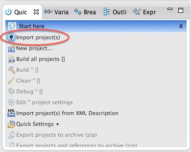
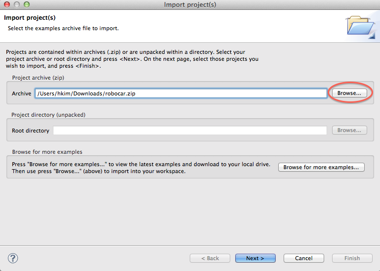
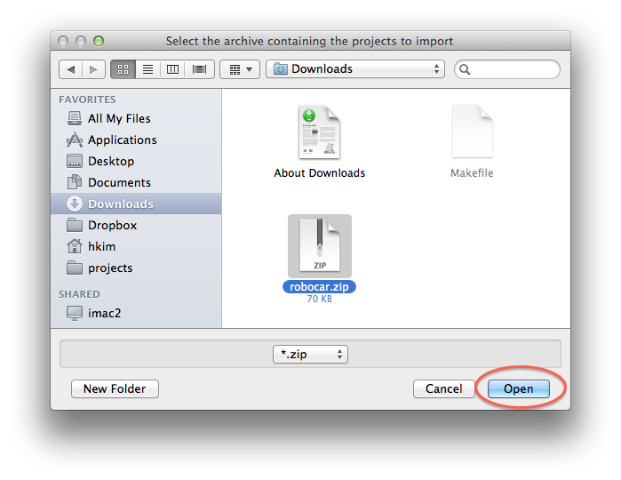
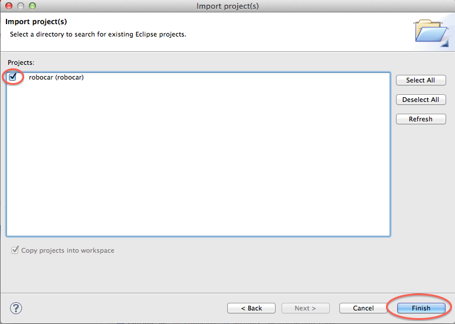
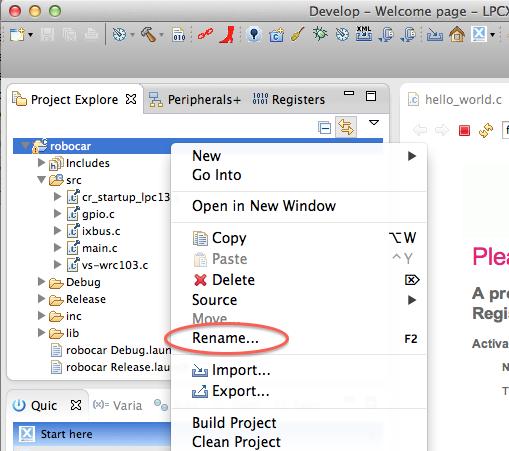

情報処理応用 ー Robocar Programming
プロジェクトの始め方
ロボカープログラミングを進めるためのプロジェクトのひな形を作った。
LED、モーターなどのテーマごとにこのひな形をコピーし、利用するとよい。
- プロジェクトのひな形
robocar.zip をクリックしてダウンロード、
適当な場所にセーブする。
情報センターの firefox は「ダウンロード」フォルダの下に
robocar.zip をセーブするはず。
- LPCXpresso を立ち上げ、左下方のペインから Import projects を選ぶ。

- browse ボタンを押し、

- 先ほどダウンロードした robocar.zip を選択し、open、そして
next。

- robocar(robocar) が選択されていることを確認して、finish。

- ウィンドウ左上ペインに現れる robocar を右クリック、Rename を選択して、
プロジェクト名を変えておく。

アドバイス
back